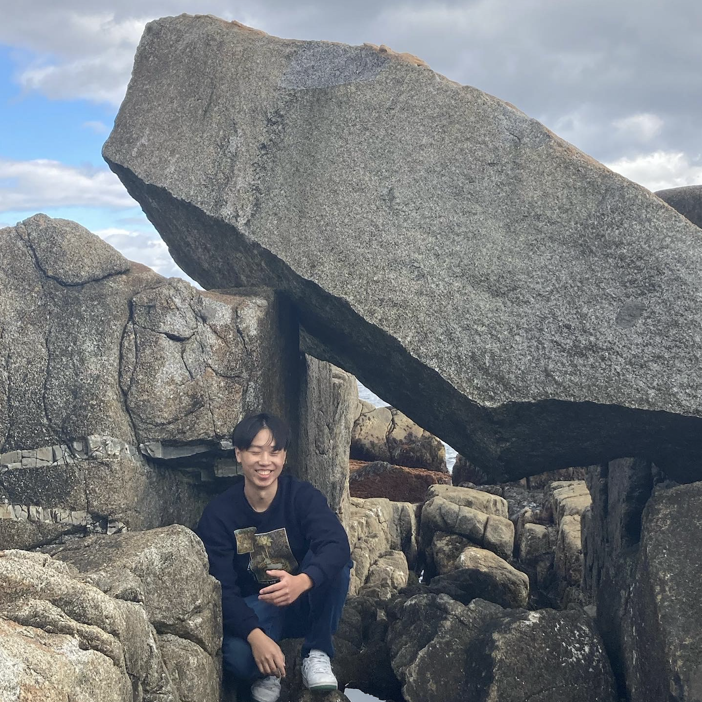
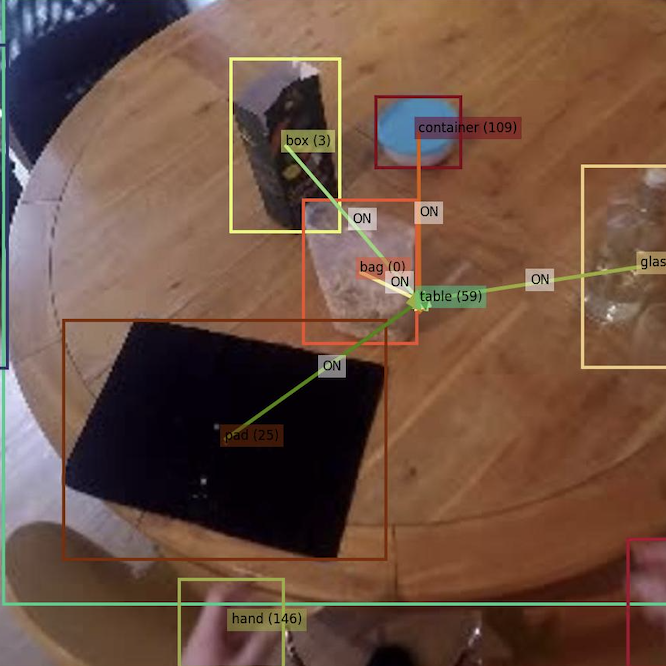
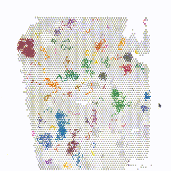
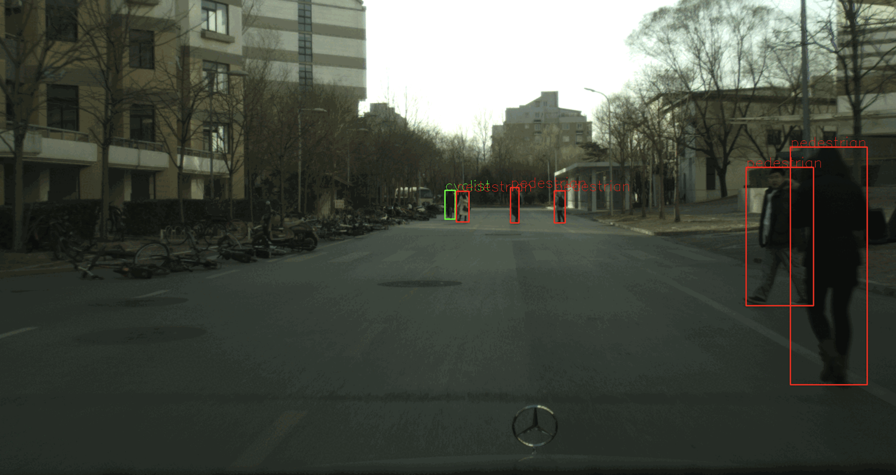
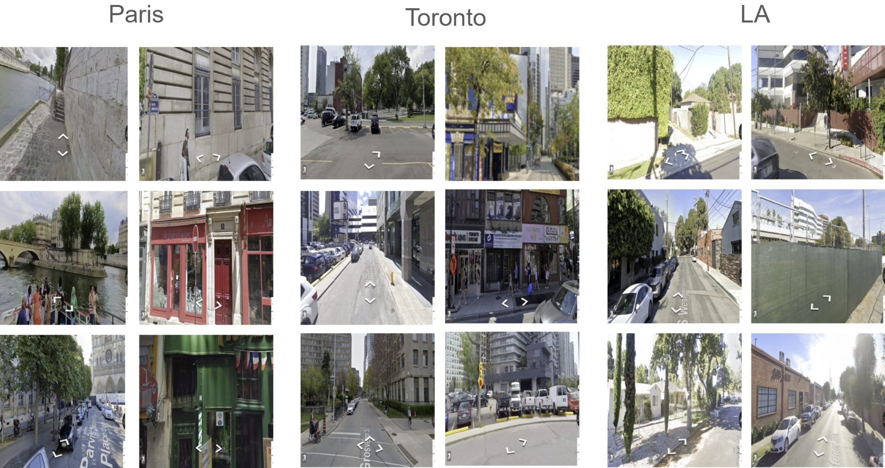
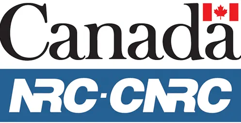

|
Josh Li I'm a 3rd year computer science undergraduate at the University of Waterloo, broadly interesed in computer vision. Currently, I work as a research assistant under Prof. Yuri Boykov. Previously, I was fortunate enough to work with Prof. Yuhao Chen and Dr. Gregory Schwartz. |

Peggy's Cove, NS |
{kind=link}
Research |
|  |
SAMJAM: Zero-Shot Video Scene Graph Generation for Egocentric Kitchen
Videos
Joshua Li, Fernando Jose Pena Cantu, Emily Yu, Alexander Wong, Yuchen Cui, Yuhao Chen arXiv, 2025 (accepted to CVPR MetaFood Workshop) code / arXiv Video scene graph generation in dynamic kitchen scenes using Gemini and SAM2. |
|  |
CellNEST reveals cell-cell relay networks using attention mechanisms on
spatial transcriptomics
Fatema Tuz Zohora*, Deisha Paliwal*, Eugenia Flores-Figueroa, Joshua Li, Tingxiao Gao, Faiyaz Notta, Gregory W. Schwartz bioRxiv, 2024 (accepted to Nature Methods) vis code / bioRxiv Graph attention network with contrastive learning to detect cell-cell communication. I wrote code to visualize results. |
Projects |

|
Simulated Robot Navigation
code / video Autonomous navigation for a differential drive robot in ROS 2 Humble (C++). From WATonomous ASD admission assignment. |
|  |
TwoWheels
code Cyclist and pedestrian detection using Faster R-CNN, SSD and YOLO. |
|  |
GeoGuessrCV
code Google Street View image classification using HOG+SVM, CNN and ResNet. |
Work |
|  |
National Research Council Canada
Computer Vision Research Assistant May - Aug. 2025 |

|
RBC Royal Bank
Developer Sep. - Dec. 2024 |
Thanks to Jon Barron for the website template